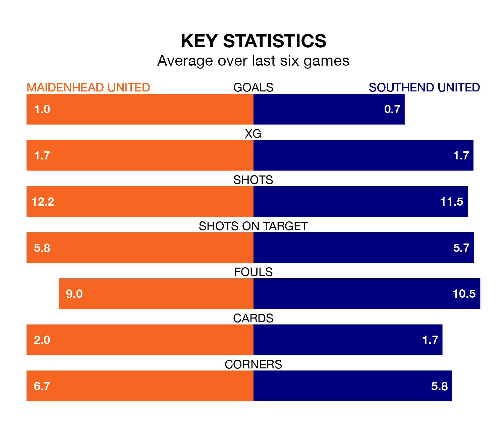

Maidenhead United welcome Southend United to the York Road Stadium on late Tuesday looking to pick up points to end their three-game losing streak.
Maidenhead's struggles have left them with seven points from their last six National League matches, while their opponents have earned the same number from a possible 18.
With 34 goals in 34 games so far this season, Maidenhead are the league's third-lowest scorers with 1.0 goals per game. But they are conceding fewer than average too, letting in 44 goals at a rate of 1.3 per game.
Southend are also below average scorers, with 1.4 goals per game, compared to a league average of 1.5. They have conceded 1.1 goals per game.
In the last five years, Maidenhead and Southend have played each other on five occasions. Maidenhead won one of them, Southend three, and they drew once.
On average, Maidenhead scored 0.8 goals and the Shrimpers 1.6 in those matches.
Their last meeting was on September 19, when Southend won 2-0 at home.
Maidenhead United are 15th in the table after 34 games, of which they have won nine and drawn 12, earning 39 points.
Southend United are five places ahead of the hosts in 10th, with 13 wins and six draws putting them on 45 points.
Maidenhead's last match was on Saturday, a 3-1 loss against Oldham Athletic, with Sam Beckwith getting the goal for Maidenhead.
Southend drew 0-0 with Oxford City last time out, also on Saturday.
Updated: 12:18 (UTC), 19/02/24